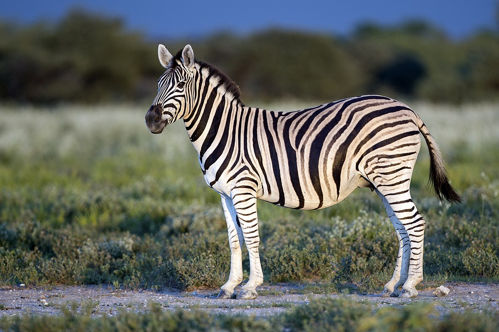

Sound




A Jungle Story
Once upon a time, in a lush jungle filled with towering trees and vibrant foliage, there existed a peaceful harmony among its diverse inhabitants. The mighty elephants ruled over the vast expanse, their graceful strides echoing through the dense undergrowth, while the elusive tigers prowled silently in the shadows.
At the heart of the jungle, a mischievous elephant named Kavi always sought adventure. His playful spirit often led him into amusing predicaments, leaving the other animals amused and exasperated. His best friend, Tara, a wise and gentle elephant, was always by his side, acting as his guiding voice of reason.
One sunny morning, as Kavi and Tara ventured deeper into the jungle, they stumbled upon a tiger cub named Raja. Lost and frightened, Raja had become separated from his family during a storm the previous night. Kavi's mischievousness was quickly replaced by compassion, and the three companions set off on a journey to reunite Raja with his parents.
Their expedition through the jungle was filled with obstacles and encounters with various animal friends who lent their assistance along the way. The chatty parrots guided them through the treetops, while the agile monkeys swung from branch to branch, offering directions. The wise old owl provided sage advice, and the colorful butterflies fluttered around, spreading hope and cheer.
As the sun began to set, Kavi, Tara, and Raja arrived at a magnificent waterfall, where the tiger cub's parents had been waiting anxiously. Tears of joy streamed down the mother's face as they were reunited, while Raja's father thanked the elephants for their selfless act of kindness.
With newfound gratitude and respect, the elephants and tigers forged a bond that would forever unite their species. From that day on, the elephants became the protectors of the jungle, ensuring the safety and harmony of all its inhabitants, while the tigers stood as symbols of strength and grace.
Kavi, Tara, and Raja became legendary figures in the jungle, their story passed down from one generation to the next. Their adventure had not only brought them together but had also woven a tapestry of friendship and love throughout the animal kingdom.
And so, in the heart of the jungle, elephants and tigers roamed side by side, a testament to the power of unity, compassion, and the enduring spirit of adventure that forever lived within their hearts.